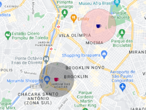

Você sabe o que é geomarketing?
O geomarketing através do uso de georreferenciamento ajuda a identificar melhores pontos para aberturas de empreendimentos. Além disso o geomarketing ajuda na identificação dos clientes do empreendimentos já existentes e potenciais novos consumidores, auxiliando, assim, na construção de estratégias de marketing mais assertivas. Abaixo vê-se uma imagem de um dos meus últimos estudos sobre o melhor local para abertura de uma cafeteria na cidade de Sâo Paulo. Após toda a análise foi sugerido o local de abertura do empreendimento (em azul) e estratégias de tráfego pago. O raio rosa representa onde meus anúncios devem chegar e o preto, onde eles não devem chegar (nos concorrentes da cafeteria do meu cliente)
